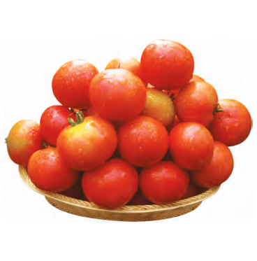

| Morphological Characters | |
|---|---|
| Plant type | Erect and determinate plant habit with purple stem |
| Maturity duration | 75-80 days |
| Grain type | Black ,Medium bold grain ( 3.86 g/100 seeds) |
| Sowing window | Suitable for all seasons |
| Seed rate/ ac | 8-10 kg/ac |
| Recommended spacing ( cm) | Kharif 30*10, Summer 20-25*10 cm |
| Recommended Areas for Cultivation | All blackgram growing areas across India. |
| Competitor product | PU-31 |
Special Features / USPs:
|
|